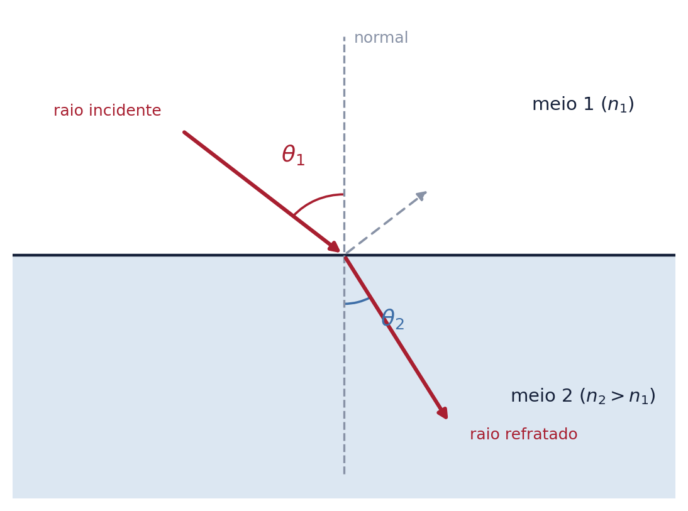
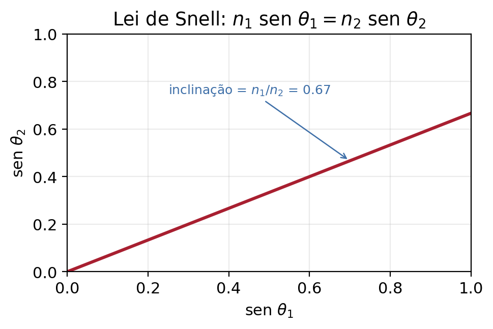
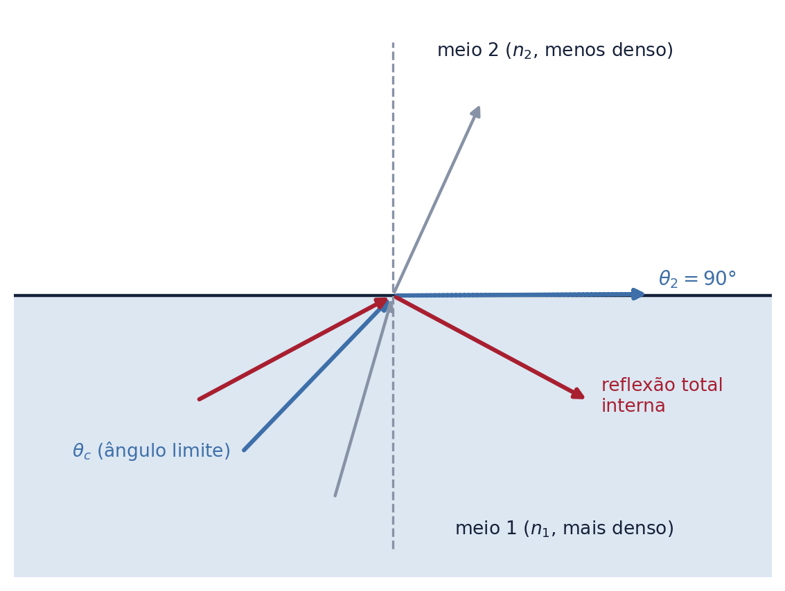
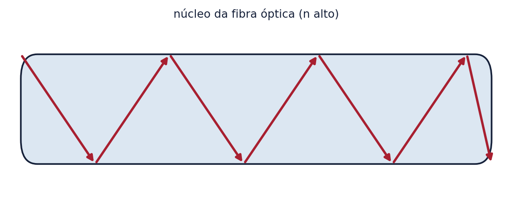
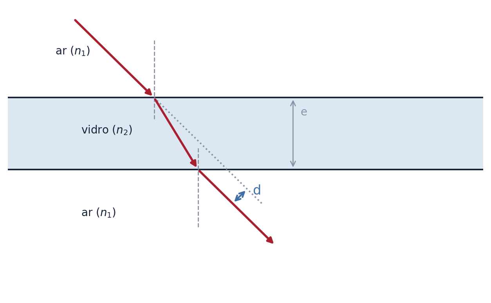
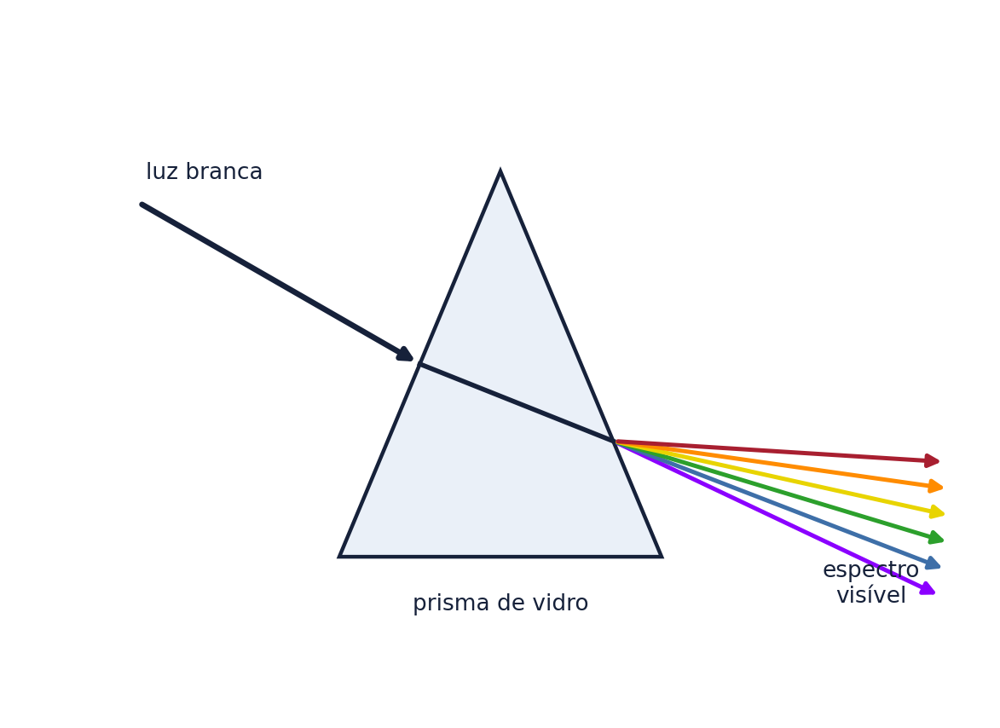

Ao colocar um lápis dentro de um copo com água, ele parece "quebrado" na superfície. Uma piscina funda parece mais rasa do que realmente é. Um diamante bem lapidado brilha muito mais que um pedaço de vidro comum. Todos esses fenômenos têm a mesma causa física: a refração da luz — a mudança de direção que um raio de luz sofre ao passar de um meio transparente para outro. Este texto cobre a refração em profundidade, do nível conceitual do Ensino Médio até os detalhes exigidos em ITA, IME e olimpíadas de Física.
1. O que é a refração da luz
Refração é o fenômeno em que um raio de luz muda de direção ao atravessar a superfície de separação (chamada dioptro) entre dois meios transparentes diferentes — por exemplo, do ar para a água, ou do ar para o vidro. Essa mudança de direção acontece porque a luz se propaga com velocidades diferentes em meios diferentes.
A figura abaixo mostra os elementos fundamentais da refração: o raio incidente, o raio refratado, a reta normal (perpendicular à superfície no ponto de incidência) e os ângulos que cada raio forma com essa normal.

Repare que, no ponto de incidência, parte da luz é refratada (atravessa para o segundo meio) e uma parte é refletida de volta ao primeiro meio — os dois fenômenos, refração e reflexão, sempre acontecem juntos numa superfície de separação entre meios transparentes.
2. Índice de refração
O índice de refração absoluto de um meio mede o quanto a luz se propaga mais lentamente nesse meio em comparação com o vácuo:
$$n = \dfrac{c}{v}$$
onde \(c \approx 3{,}0 \times 10^8\) m/s é a velocidade da luz no vácuo e \(v\) é a velocidade da luz no meio considerado. Como \(v \leq c\) sempre, temos \(n \geq 1\) para qualquer meio material — o vácuo tem, por definição, \(n = 1\).
| Meio | Índice de refração (aprox.) |
|---|---|
| Vácuo | \(1\) (exato) |
| Ar (condições normais) | \(\approx 1{,}0003\) |
| Água | \(\approx 1{,}33\) |
| Vidro comum (crown) | \(\approx 1{,}50\) |
| Vidro flint (denso) | \(\approx 1{,}65\) |
| Diamante | \(\approx 2{,}42\) |
Diz-se que um meio é mais refringente (ou opticamente mais denso) que outro quando seu índice de refração é maior — isso não tem relação direta com a densidade de massa do material, apenas com o quanto ele reduz a velocidade da luz.
Também se define o índice de refração relativo entre dois meios, \(n_{1,2} = n_1/n_2\), útil para comparar diretamente dois meios sem passar pelo vácuo.
3. As leis da refração
1ª Lei (planaridade): o raio incidente, a reta normal e o raio refratado estão sempre contidos no mesmo plano.
2ª Lei (Lei de Snell-Descartes): para dois meios homogêneos e transparentes, vale a relação:
$$n_1 \operatorname{sen} \theta_1 = n_2 \operatorname{sen} \theta_2$$
onde \(\theta_1\) é o ângulo de incidência e \(\theta_2\) é o ângulo de refração, ambos medidos em relação à normal. O gráfico abaixo mostra a relação linear entre \(\operatorname{sen}\theta_1\) e \(\operatorname{sen}\theta_2\), cuja inclinação é a razão \(n_1/n_2\):

Uma consequência direta da lei de Snell: quando a luz passa para um meio mais refringente (\(n_2 > n_1\)), o raio se aproxima da normal (\(\theta_2 < \theta_1\)); quando passa para um meio menos refringente, o raio se afasta da normal (\(\theta_2 > \theta_1\)).
4. O que muda e o que não muda na refração
Ao mudar de meio, a frequência da onda luminosa permanece exatamente a mesma — ela é determinada pela fonte que emite a luz, não pelo meio de propagação. Já a velocidade e o comprimento de onda mudam, sempre na mesma proporção, de modo que a relação fundamental \(v = \lambda f\) continue válida em cada meio:
$$\lambda_{\text{meio}} = \dfrac{\lambda_{\text{vácuo}}}{n}$$
Isso explica, por exemplo, por que a cor da luz (associada à frequência, na percepção fisiológica) não muda ao entrar na água, embora seu comprimento de onda dentro da água seja menor.
5. Dedução da Lei de Snell pelo Princípio de Fermat
Para o aluno que busca uma compreensão mais profunda: a lei de Snell pode ser deduzida a partir do Princípio de Fermat, que afirma que a luz percorre, entre dois pontos, o caminho que minimiza (ou torna estacionário) o tempo de percurso — não necessariamente o caminho mais curto em distância.
Considerando um raio que sai de um ponto A no meio 1, atinge a interface em um ponto variável, e chega a um ponto B no meio 2, o tempo total de percurso é \(t = d_1/v_1 + d_2/v_2\), onde \(d_1\) e \(d_2\) dependem da posição do ponto de incidência. Minimizando \(t\) em relação à posição desse ponto (derivada igual a zero) e usando \(v = c/n\), chega-se exatamente a \(n_1 \operatorname{sen}\theta_1 = n_2 \operatorname{sen}\theta_2\) — a lei de Snell surge naturalmente como consequência de um princípio de otimização, e não como uma regra imposta.
6. Ângulo limite e reflexão total interna
Quando a luz vai de um meio mais refringente para um meio menos refringente (\(n_1 > n_2\)), o ângulo refratado é sempre maior que o de incidência. Existe um ângulo de incidência especial, o ângulo limite \(\theta_c\), para o qual o ângulo de refração vale exatamente \(90°\) — o raio refratado "raspa" ao longo da própria interface:
$$\operatorname{sen}\theta_c = \dfrac{n_2}{n_1} \qquad (n_1 > n_2)$$
Para qualquer ângulo de incidência maior que \(\theta_c\), não existe mais raio refratado — toda a luz é refletida de volta ao meio 1. Esse fenômeno é a reflexão total interna, ilustrada abaixo:

Aplicações da reflexão total interna:
Fibras ópticas: um filamento fino de vidro ou plástico com índice de refração do núcleo maior que o da casca externa. A luz injetada numa das pontas sofre sucessivas reflexões totais internas nas paredes do núcleo, sendo conduzida por longuíssimas distâncias com perda mínima de intensidade — a base de toda a internet de fibra óptica e de instrumentos médicos como o endoscópio.

Diamantes: o altíssimo índice de refração do diamante (\(n \approx 2{,}42\)) resulta em um ângulo limite muito pequeno (\(\theta_c \approx 24{,}4°\)). Os lapidários cortam as facetas do diamante de modo que a luz que entra sofra múltiplas reflexões totais internas antes de sair, o que produz o brilho intenso característico da pedra.
Miragens: em dias muito quentes, o ar próximo ao solo fica mais aquecido (e menos denso opticamente) que o ar mais acima, criando um gradiente contínuo de índice de refração que faz a luz do céu se curvar e atingir o olho do observador como se viesse do chão — produzindo a ilusão de uma poça de água refletindo o céu.
7. Lâmina de faces paralelas
Uma lâmina de faces paralelas é um bloco de material transparente (como uma vidraça) com as duas superfícies paralelas entre si. Ao atravessá-la, um raio de luz sofre duas refrações — uma ao entrar, outra ao sair — e, como as superfícies são paralelas, o raio emergente é paralelo ao raio incidente original, porém deslocado lateralmente por uma distância \(d\):

O desvio lateral \(d\) pode ser calculado, em função da espessura \(e\) da lâmina e dos ângulos de incidência (\(\theta_1\)) e refração (\(\theta_2\)) na primeira face, por:
$$d = e\, \dfrac{\operatorname{sen}(\theta_1 - \theta_2)}{\cos\theta_2}$$
Esse é o efeito responsável pela distorção visual ao observar objetos através de um vidro grosso ou de um aquário: os objetos parecem ligeiramente deslocados de sua posição real.
8. Prisma óptico e dispersão da luz
Diferente da lâmina de faces paralelas, um prisma óptico tem faces não paralelas (tipicamente um prisma triangular), o que faz com que o raio emergente não seja paralelo ao raio incidente — o prisma desvia a luz de um ângulo total chamado desvio angular.
Mais importante: o índice de refração de um material transparente depende ligeiramente do comprimento de onda (da cor) da luz — fenômeno chamado dispersão. Em geral, luzes de menor comprimento de onda (violeta, azul) sofrem um índice de refração maior que luzes de maior comprimento de onda (vermelho), sendo portanto mais desviadas. Por isso, ao atravessar um prisma, a luz branca (que é uma mistura de todas as cores visíveis) se decompõe no espectro visível:

Esse mesmo princípio explica o arco-íris: gotículas de água em suspensão no ar funcionam como pequenos prismas (combinando refração, reflexão interna e nova refração), decompondo a luz solar nas cores do espectro visível. A relação entre índice de refração e comprimento de onda pode ser aproximada, para a maioria dos materiais transparentes na região visível, pela equação de Cauchy:
$$n(\lambda) \approx A + \dfrac{B}{\lambda^2}$$
onde \(A\) e \(B\) são constantes empíricas do material — uma relação de nível mais avançado, útil para quem for além do Ensino Médio tradicional rumo à ótica instrumental.
9. Exemplos resolvidos
Exemplo 1. Um raio de luz incide do ar (\(n_1 = 1{,}00\)) sobre a água (\(n_2 = 1{,}33\)) com ângulo de incidência de \(50°\). Calcule o ângulo de refração.
$$1{,}00 \cdot \operatorname{sen} 50° = 1{,}33 \cdot \operatorname{sen}\theta_2 \;\Rightarrow\; \operatorname{sen}\theta_2 = \dfrac{0{,}766}{1{,}33} \approx 0{,}576 \;\Rightarrow\; \theta_2 \approx 35{,}2°$$
Exemplo 2. Determine o ângulo limite para a interface vidro (\(n_1 = 1{,}50\)) – ar (\(n_2 = 1{,}00\)).
$$\operatorname{sen}\theta_c = \dfrac{1{,}00}{1{,}50} \approx 0{,}667 \;\Rightarrow\; \theta_c \approx 41{,}8°$$
Esse é, precisamente, o ângulo usado como referência na figura da seção 6 — qualquer raio de luz dentro do vidro que incida na interface vidro-ar com ângulo maior que \(41{,}8°\) sofre reflexão total interna.
Conclusão
A refração da luz é um dos temas mais ricos da Física do Ensino Médio, exatamente por conectar um fenômeno do dia a dia (o lápis "quebrado" no copo d'água) a uma estrutura matemática precisa (a lei de Snell) e a aplicações tecnológicas de ponta (fibra óptica). Para o aluno da rede tradicional, o essencial é dominar a lei de Snell, o conceito de índice de refração e a reflexão total interna. Para quem mira ITA, IME e olimpíadas, vale ir além: entender a dedução via Princípio de Fermat, a dispersão cromática e o tratamento quantitativo de lâminas e prismas — a base necessária para, mais adiante, estudar lentes esféricas e instrumentos ópticos.